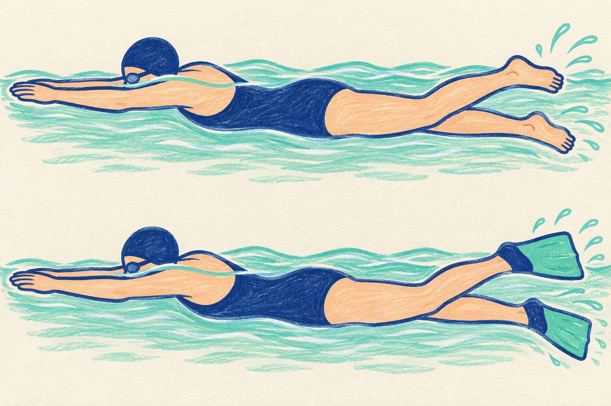
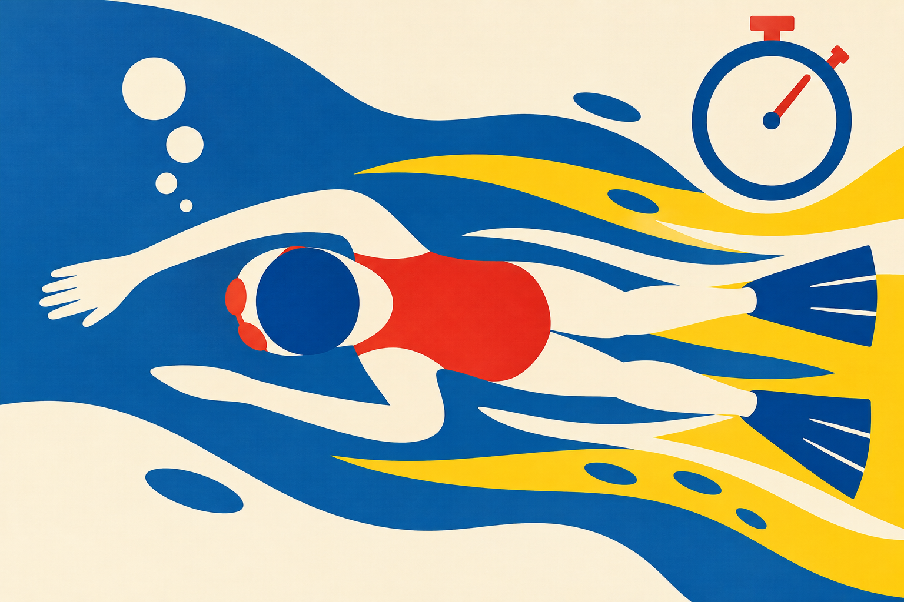
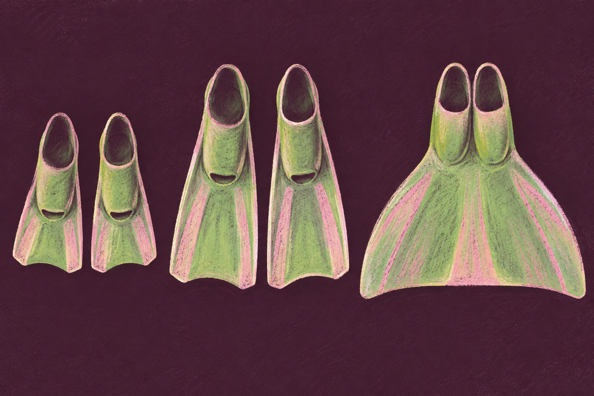
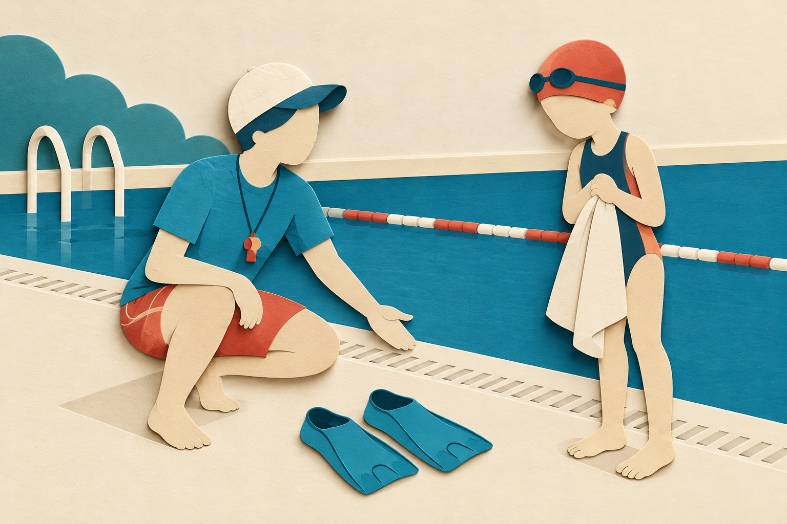

SWIMMING RESEARCH / 17
フィンで速いと、楽にもなる？
速さをそろえると見える違い
2026年11月3日 公開

フィンをつけて泳ぐと、壁がいつもより早く近づく。足をたくさん動かさなくても進める感じがする。「今日、急にうまくなったのかな」と、うれしくなることもあるでしょう。
その速さには、道具をつけたことで変わった部分があります。フィンは足に履く、水を押す面を広げる道具です。同じ人でも、つける前と後では泳ぐ条件が変わります。今日は、速さをそろえた比較と、速さが変わった比較を分けてみます。
今日は「フィンは役立つ、役立たない」を決める話ではありません。研究が比べた速さと負担を読み分け、普段フィンを使う人が、次の練習で何を見ればよいかを考えます。
1｜速く進めた理由は、一つに決められない
フィンを履くと、足先に水と触れる面が加わります。足だけで動かすときとは、水への働きかけも、脚を動かすリズムも変わりえます。同じ人が泳いでも、道具を含めた動きになるのです。
たとえば、自転車で走れば歩くより遠くへ進めます。でも、それだけで歩く力が急に伸びたとは言いません。道具の働きが加わったからです。フィンも、つけているときの進みやすさを、そのまま道具なしの能力の変化にはできません。このたとえは道具の有無を分けるためのもので、自転車とフィンの仕組みが同じという意味ではありません。
2002年研究は、脚のキック

腕は頭の先に伸ばし、脚で進む。
同じキック課題で道具の有無を比較。
2002年の研究は、男子大学競泳選手7人について、水面で腕を頭の先へ伸ばし、脚のキックで進む条件を調べました。フィンありと、なしを比べた研究です。腕も使うクロール全体を、そのまま比較した数字ではないことが大切です。Zamparoら、2002
似た速さで比べると、フィンありでは、一定の距離を進むために使ったエネルギーが約40%小さくなりました。エネルギーとは、ここでは身体が動くために使う量です。呼吸の測定などから求めた値で、本人の「きつさが40%減った」という意味ではありません。フィンなしの距離あたりの量を基準に比べています。また、約40%は、この研究の条件での結果です。子どもや、手持ちのどのフィンでも同じ割合になるとは言えません。
この結果から、フィンを使うと進み方が変わることは分かります。ただし、数週間練習して技術が身についたかを調べた結果ではありません。その場で変わる条件と、練習を重ねて残る変化は、違う問いです。普段クロールを泳ぐ人に持ち帰れるのは「フィンをつけたか、速さをそろえたかを区別して見る」考え方で、40%をそのまま自分に当てはめることではありません。
2｜「1mあたり」と「1分あたり」を分ける
研究でいう「エネルギーが小さい」は、何をそろえて比べたかで意味が変わります。「同じ距離を進むための量」と、「同じ時間に使う量」を、いったん分けてみましょう。
「1mあたり」は、1m進むために使う量です。「1分あたり」は、1分間に使う量です。おこづかいで考えるなら、「一つ買うといくら」と「一日にいくら使う」の違いに似ています。一つが安くなっても、買う数が増えたら、一日に使う合計が必ず減るとは限りません。
同じにしたものを、先に見る

挿画は速さと負担というテーマのイメージです。2002年の実験は、図1のように両腕を前へ伸ばしたキック条件です。
約40%の読み方
フィンなしの「距離あたりのエネルギー量」を基準にした、2002年研究のキック条件の結果です。
本人のきつさ、時間あたりの量、腕も使うクロール全体へ、同じ割合を付けません。
比べた結果：一定距離を進むためのエネルギー量。
比べた結果：どれだけ速く進むか。
泳ぎでも、1mあたりの量が小さくなったとき、同じ速さのまま、同じ時間に使う量が少なくてすむ場合も、同じ時間の使用量で、もっと遠くへ進む場合もあります。2002年の研究でも、身体が同じ時間に使うエネルギーの量をそろえて比べると、フィンありでは速く進めました。研究の言葉では、この「単位時間あたりに使う量」を代謝パワーと呼びます。名前より、時間で区切って比べている点を押さえれば十分です。これは研究の装置で測る量で、「自分が同じくらいきついと感じた」と同じ意味ではありません。Zamparoら、2002
したがって、「フィンなら負担が必ず小さい」とまでは言えません。ここから練習を考えるときも、速さをそろえた比較と、速さを変える課題は分けます。フィンでいつもより速く泳げば、研究で速さをそろえたときとは別の条件になるからです。
研究で測った量と、自分が感じたきつさは、どちらも振り返る材料になりますが同じものではありません。時計で確かめる速さ、呼吸の余裕、研究で測るエネルギーを、一つの「楽」という言葉にまとめないようにします。
速さをそろえると、違うものが見えてくる。
3｜大きいフィンなら、もっとよい？
進みやすさを知ると、「もっと大きいものを使えばよいのかな」と考えるかもしれません。でも、大きさだけで道具の良し悪しを決めるのは早そうです。硬さや、両足をどう動かすかも違うからです。
2006年の研究では、大学の泳者10人が、フィンなし、小さく柔らかいフィン、大きく硬いフィン、両足を一枚につなぐモノフィンで泳ぎました。モノフィンでは両脚をそろえるドルフィンキック、ほかの条件では左右の脚を交互に動かすクロールのキックを使っています。Zamparoら、2006
道具と、脚の動きの組合せ

足をどう動かすか
ある瞬間、片方が上へ、もう片方が下へ。次は入れ替わります。
両足が一枚につながり、一緒に上下する動きを使います。
矢印は足の上下の動かし方だけ。身体の波、角度、力を測った図ではありません。
左右を交互に動かすキック。
左右を交互に動かすキック。
両脚をそろえるドルフィンキック。
フィンの条件では、道具なしに比べて距離あたりのエネルギー量が小さくなり、同じ速さでのキックの回数も減りました。ただし、道具の面積だけを変えた比較ではありません。大きさと硬さが一緒に違い、モノフィンでは脚の動かし方も違います。この結果を「大きいほど必ずよい」「この形が、誰にとっても一番」とすることはできません。
また、「回数が減った」は結果であって、全員がキックを減らせばよいという指示ではありません。フィンなしで同じように回数だけ減らすとどうなるかは、別に確かめる必要があります。道具をつけた状態の数字から、道具なしの正解を逆算しないようにします。
練習で大切なのは、道具の順位をつけるより、「今日は何を感じるために使うか」を指導者とそろえることです。足の動きを確かめるのか、いつもとは違う速さで身体の位置を感じるのか。目的が違えば、見たいところも変わります。これは本記事の使い分けの考え方で、上の研究が特定の練習順序を証明したものではありません。
4｜今日は、何を比べたいかを決める
普段からフィンを使い、施設と指導者が使用を認めている人は、次回の練習で「何を比べたいか」を一つ決めてみましょう。このために新しく買う必要はありません。使わない人は、道具ありのタイムと、道具なしのタイムを分けるところだけ持ち帰れます。
たとえば、いつもの余裕のある速さで、呼吸や脚の動かしやすさがどう違うかを知りたいなら、速さをそろえて比べます。反対に、普段とは違う速さで身体の位置を感じる練習なら、速さが変わることを含んだ課題です。どちらも一度に調べようとせず、今日はどちらを見るか、指導者と先にそろえます。これは本記事の観察案で、研究の再現手順ではありません。
今日は何を比べる？

- 1目的を先に一つ選ぶ
同じ速さの負担か、違う速さの動きか。
- 2条件と感覚を分ける
フィン有無・タイム・呼吸の余裕。
- 3道具なしの記録も別に見る
別の日にも見て、原因は急いで決めない。
同じ速さのつもりでも、壁へ早く着くなら実際には速さが変わっています。タイムを測れるときは、同じ始点と終点で確かめます。測れないときは「同じ速さだった」と確定せず、フィンあり／なしと、自分が感じたきつさを分けて残せば十分です。
速さを上げる課題なら、フィンありの最速を、道具なしの上達の証拠にはしません。「道具をつけた条件で速く進めた」と記録します。外した後にその速さを無理に追いかけず、慣れた余裕のある泳ぎへ戻します。息止めや潜る距離の延長で確かめる必要はありません。
比べて呼吸が楽だったら、次の機会にも同じ条件で確かめる候補にします。慌ただしくなったら、速さまで上がっていなかったかを先に振り返ります。どちらも一度の結果だけで原因は決まりません。痛みや使いにくさがある道具を、研究を理由に使い続ける必要もありません。
道具なしの変化を知りたいときは、道具なしで、同じ距離・同じ泳ぎ方の記録を別の日にも見ます。それでも、変化の原因がフィンだと一度で証明できるわけではありません。
フィンで進めた体験は、練習の材料になります。次回は「同じ速さで比べるのか、違う速さを体験するのか」を一つ。 速さと負担のどちらを見た記録なのかを残せば、道具を外した自分の泳ぎとも、混ぜずに振り返れます。
まとめ｜「速くなった」と「負担が減った」は分けて確かめる
研究の目的は？ 2002年の論文は、フィンで進む速さとエネルギーの使い方がどう変わるかを調べました。2006年の論文は、大きさ・硬さの異なるフィンやモノフィンで、エネルギーとキックの動きがどう違うかを調べました。
何を比べた？ 2002年は男子大学競泳選手7人が両腕を前に伸ばしたキック条件で、フィンあり・なしを比較。2006年は大学の泳者10人で、なし・小さく柔らかいフィン・大きく硬いフィン・両足用のモノフィンを比べました。モノフィンでは脚の動かし方も違います。
何が分かった？ 2002年の条件では、似た速さならフィンありで一定距離あたりのエネルギーが約40%小さく、同じ時間あたりのエネルギー使用量なら、より速く進めました。2006年も、同じ速さではフィン使用中の距離あたりエネルギーとキック回数が減りました。これは本人の「きつさが40%減った」という結果ではありません。
この記事で伝えたい結論。 フィンで速く進めても、その泳ぎが楽になったかは別に確かめる必要があります。速さをそろえればエネルギーが少なくて済むという研究結果を、速さが上がった普段の泳ぎへそのまま当てはめないでください。外した後の上達も、この2本では確認していません。
では、どうすればよい？【記事からの提案】 次回は「同じ速さで負担を比べる」か「違う速さを体験する」かを先に一つ選びます。負担を比べたいなら同じ区間のタイムを確認し、呼吸の余裕は別に記録してください。時計がなければ、同じ速さだったとは決めず、フィンの有無と感じたきつさを残します。
参考文献と確認範囲
- Zamparo Pほか（2002）How fins affect the economy and efficiency of human swimming. Journal of Experimental Biology, 205, 2665–2676. DOI、共著者サイトの本文PDF。本文の対象・キック条件と抄録を確認。
- Zamparo Pほか（2006）Economy and efficiency of swimming at the surface with fins of different size and stiffness. European Journal of Applied Physiology, 96, 459–470. 原著抄録。条件と結果は抄録の確認範囲。
これらは、道具あり・なしの条件の違いを調べた研究です。長期の上達や、道具なしへの学習の持ち越しを保証する資料ではありません。本文の観察案は編集上の提案で、研究と同じ効果を再現する手順ではありません。図は比較と動きを説明する模式表現です。